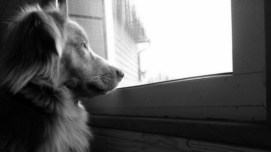
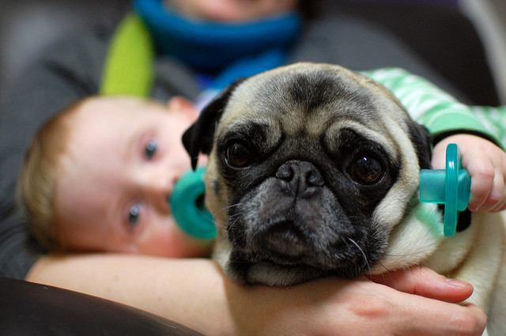
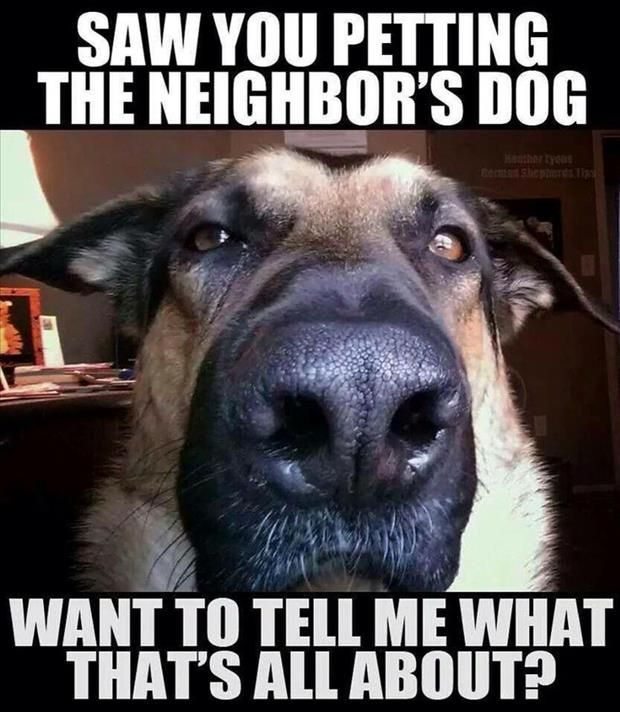
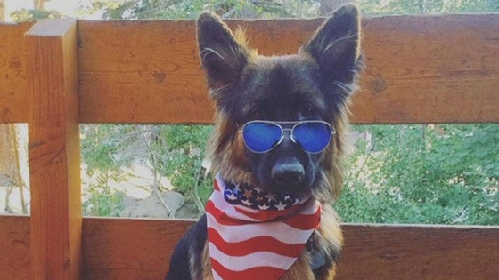
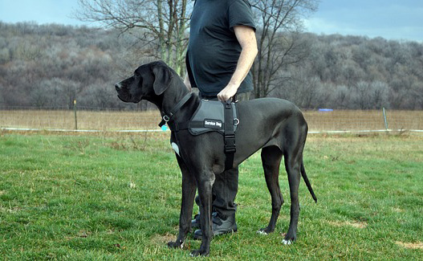
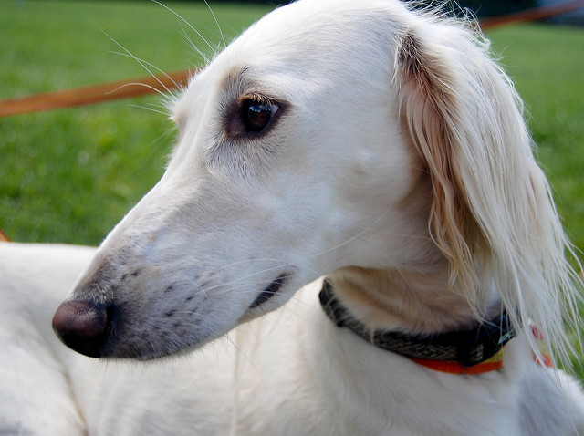
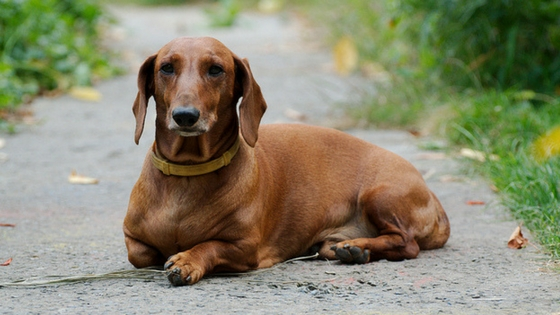
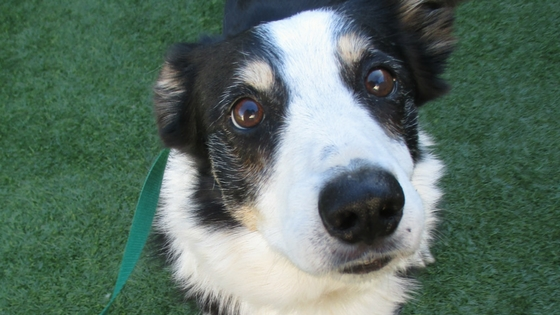
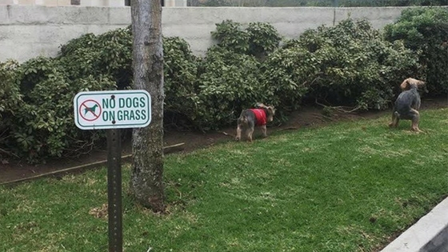
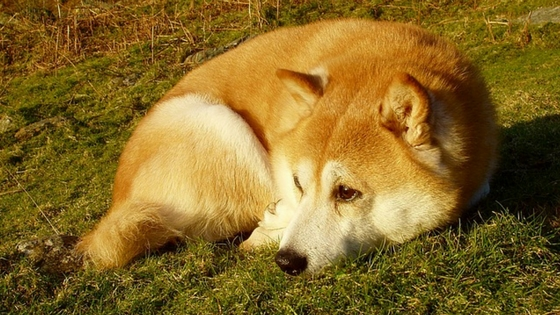

1. Dogs have a sense of time. It's been proven that they know the difference between a hour and five. If conditioned to, they can predict future events, such as regular walk times.

2. Your dog is as smart as a two-year old! Ever wonder why children around this age seem to have a special bond with the family dog? It could be because they speak the same language, roughly 250 words and gestures in fact.

3. Dog can genuinely get jealous when they see you display affection for another creature.

4. The United States has the highest pet dog population in the world. Approximately 75.8 million in fact.

5. Seeing eye dogs are trained to do their “business” on command. This way their owner can clean it up a bit easier. Some of the popular commands are “get busy” and “go time”.

6. The Saluki is the world’s oldest dog breed. They appear in ancient Egyptian tombs dating back to 2100 B.C.

7. Dachshunds were originally bred to fight badgers.

8. Dogs have wet noses because it helps to absorb scent chemicals.

9. When your dog is carefully choosing the perfect place to do his business, it is because they prefer to go poop in alignment with the Earth’s magnetic field.

10. Have you ever wondered why your dog curls up in a ball when they sleep? It’s actually an age-old instinct to keep themselves warm and to protect vital organs while they sleep.
